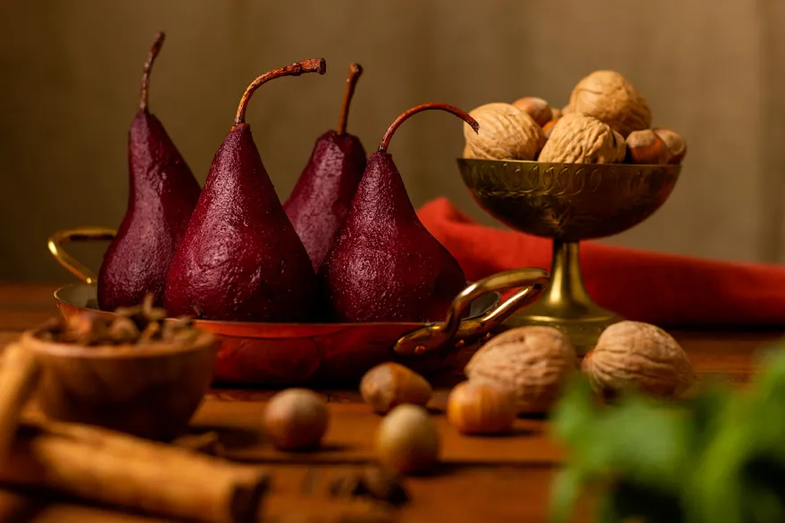

Poached pears are a beautiful and easy dessert. No special skills, pans or ingredients required — just fruit, wine, and warm spices! Plus, they taste even better the next day, making this an ideal make-ahead dessert.

ingredients
6 pears, still a little firm
1 bottle red wine (Chateauneuf Du Pape)
200g caster sugar
1 cinnamon stick
1 vanilla pod, split
6 black peppercorns
2 strips of orange peel
4 tablespoons crème de cassis
Method
Peel and core the pears, taking care to leave the stalks in place.
Put all the remaining ingredients, except the crème de cassis, into a pan and bring to the boil.
Add the pears, making sure they are submerged and cover with greaseproof paper. Simmer for 15-20 minutes or until the pears are just tender.
Add the crème de cassis and then remove the pears and place them in a serving bowl. Strain the liquid into another pan and boil until it is reduced by a third.
Pour the glaze over the pears and leave to cool until you are ready to serve.